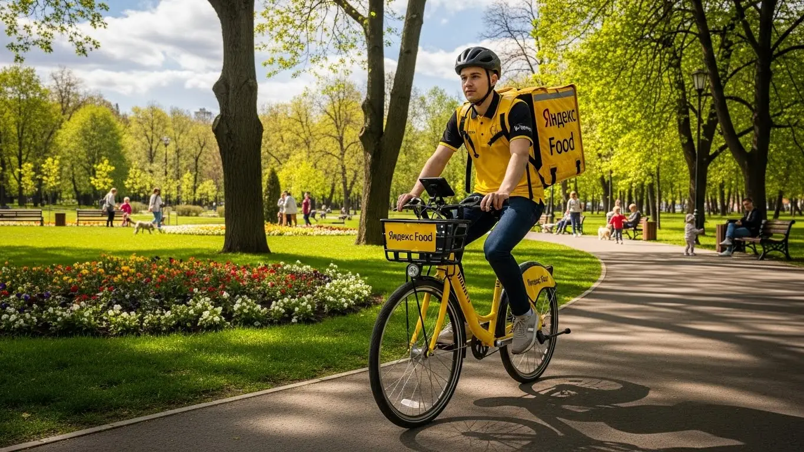
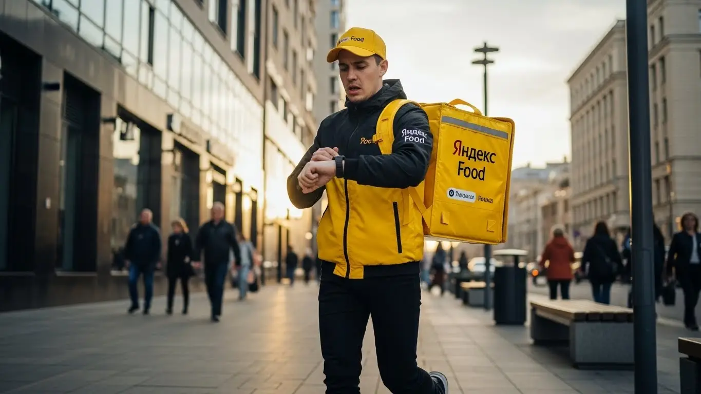
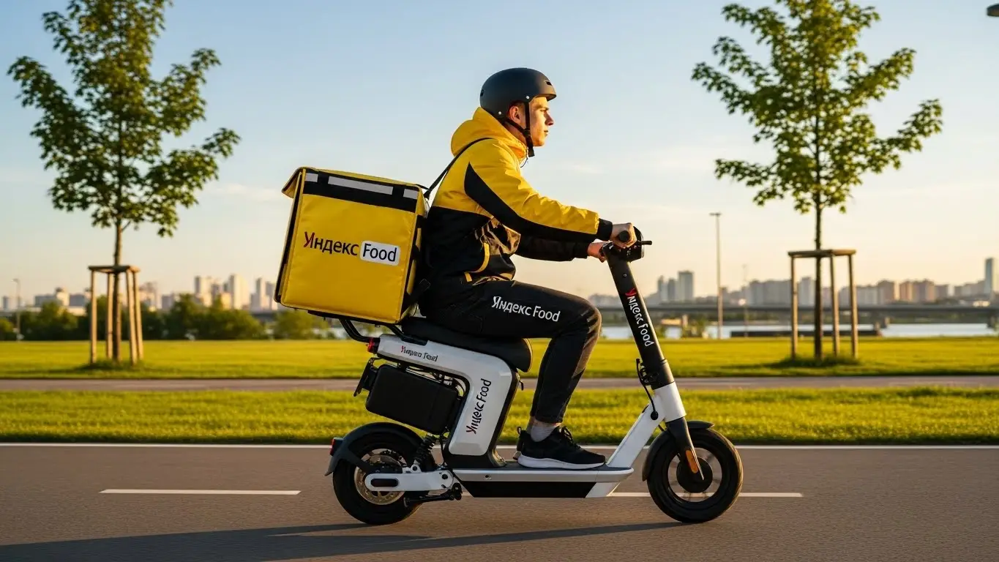

Работа курьером Яндекс Еды в Смоленске 2025-2026: доход, условия
- Работа курьером Яндекс Еды в Смоленске: для кого эта вакансия и что вы получите
- Сколько вы будете зарабатывать курьером в Смоленске: калькулятор дохода и разбор выплат
- Реальный заработок курьера в Смоленске: смены и месячный доход
- Требования к кандидату и документы
- Самозанятость, налоги и юридическая чистота
- Пошаговое оформление и первый выход на линию в Смоленске
- Пешком, на вело или на авто: что выгоднее в Смоленске
- Районы, маршруты и «топовые» зоны заказов в Смоленске
- Безопасность, страховка, штрафы и оплата простоя
- Плюсы и возможные минусы работы курьером в Смоленске
- Короткие ответы на главные вопросы
- Ответы на главные вопросы о работе курьером Яндекс Еды в Смоленске
- Итоги и ваш следующий шаг
Все города
Слушай, вот ты сейчас, наверное, сидишь и думаешь: а стоит ли вообще соваться в эту «Яндекс Еду» в нашем Смоленске? Не обманут ли с доходом, не убью ли я свою ласточку на наших дорогах, пока буду метаться между Киселёвкой и Центром? Или, может, пешим курьером пойти, но как тогда по этим холмам с тяжёлыми заказами? Типичные страхи новичка, я их всех знаю. И давай сразу: здесь не будет рекламной шелухи, только мой личный, проверенный годами опыт работы курьером Яндекс Еды именно в Смоленске.
Многие приходят, думая, что всё просто: взял заказ, отвёз, получил деньги. А потом через месяц сливаются, потому что не учли расходы на бензин или проезд, не поняли, как работает система приоритетов, или просто не знали, что в час пик на Николаева лучше не соваться, а в Заднепровье спрос совсем другой. В Смоленске свои особенности: где-то пробки, где-то дворы-лабиринты, где-то клиенты любят заказывать из-за города. Без понимания этой «внутрянки» ты будешь терять не только время, но и реальные деньги, набивая шишки там, где я уже давно проехал. Если ты живешь в Смоленске и хочешь узнать больше об условиях, FAQ и подать заявку, подробнее про работа курьером Яндекс Еда в Смоленске можно почитать здесь: работа курьером Яндекс Еда в Смоленске.
Так вот, чтобы ты не повторял чужих ошибок, в этой статье мы разберём всё по полочкам. Выясним, сколько реально можно заработать курьером Яндекс Еды в Смоленске – пешим, на велике или на авто. Посчитаем чистый доход с учётом всех расходов. Я покажу на примерах, какие районы Смоленска самые «рыбные» в разное время суток, как погода влияет на заказы и где лучше не появляться. Расскажу, как избежать штрафов, как работает система бонусов, и чем Яндекс Еда отличается от других доставок именно в нашем городе. И, конечно, поделюсь отзывами реальных смоленских курьеров.
Меня зовут Алексей, и я в этой теме уже не первый год. Начинал сам курьером, а сейчас у меня небольшой таксопарк-партнёр, так что всю эту кухню знаю изнутри, от и до. И главное – знаю её именно в Смоленске. Так что давай по порядку, без лишних слов. Сейчас всё разложу по полочкам, чтобы ты мог принять взвешенное решение и начать зарабатывать, а не просто тратить время. Готов?
Прежде чем мы углубимся в детали, предлагаю короткий ликбез по ключевым темам статьи, чтобы ты быстро сориентировался.
Экспресс-навигация: что ты точно узнаешь о работе курьером в Смоленске
В этой статье ты ТОЧНО узнаешь:
- Как реально рассчитать свой доход курьера в Смоленске за смену и за месяц?
- Какой тип доставки (пеший, вело, авто) выгоднее выбрать для Смоленска и его районов?
- Как избежать штрафов и не потерять приоритет в заказах, чтобы стабильно зарабатывать?
- Почему самозанятость — это лучший формат для работы курьером и как её оформить за 10 минут?
- В каких районах Смоленска больше всего заказов и как выбирать «рыбные» слоты в Яндекс Про?
- Что делать, если заказов мало, и как работает оплата простоя?
А если тебе некогда читать всю статью — переходи сразу к заключению, где ты найдёшь короткие ответы на все эти вопросы и указания, в каких разделах искать подробности.
А чтобы сразу получить наглядное представление о возможностях заработка, взгляни на инфографику с ключевыми цифрами.
Ключевые цифры работы курьером Яндекс Еды в Смоленске
Доход в час
350–450 ₽
в пиковые часы, зависит от спроса
Доход за смену
2 800–3 600 ₽
за 8-часовой слот, при активной работе
Средние расходы
200–400 ₽
на транспорт, связь и питание в смену
Лучшее время
Обед и ужин
максимум заказов и повышенные коэффициенты
Доля чаевых
15–25%
заказов приносят дополнительный доход

Работа курьером Яндекс Еды в Смоленске: для кого эта вакансия и что вы получите
Кому подойдёт эта работа в Смоленске
Работа курьером в Яндекс Еде в Смоленске — отличный вариант для тех, кто ищет гибкий график и возможность быстро начать зарабатывать. Она идеально подходит студентам, которым нужна подработка после пар или на выходных, ведь здесь не требуется опыт. Ты можешь выйти на линию, даже если раньше никогда не работал в доставке.
Кроме того, эта вакансия станет хорошим подспорьем для людей, которым нужен дополнительный доход или кто временно остался без основной работы. Водители, у которых есть личный автомобиль, могут использовать его для доставки, превращая время в деньги. Главное преимущество — свободный график и ежедневные выплаты, что позволяет тебе самому планировать свой день и получать заработанное без задержек. Условия работы курьером в Яндекс Еде максимально прозрачны, а все заказы и статистика доступны в приложении Яндекс Про.
Главные преимущества для жителей районов Промышленный, Ленинский, Заднепровский
Одно из ключевых преимуществ работы курьером в Смоленске — возможность работать рядом с домом. Тебе не придется тратить часы на дорогу через весь город, чтобы добраться до «рыбных» мест. Например, если ты живешь в Промышленном районе, то можешь брать заказы из местных кафе и ресторанов Яндекс Еды, доставляя их по Киселёвке или в соседние кварталы. Для пеших курьеров и велокурьеров это особенно удобно.
Жителям Ленинского района удобно работать в центре Смоленска, где всегда много заказов из-за плотной застройки и большого количества заведений. А если ты из Заднепровского района, то можешь сосредоточиться на доставках в этом районе, охватывая Сортировку и прилегающие территории. Это позволяет экономить время и деньги на проезде, делая работу в Яндекс Доставке максимально комфортной и эффективной.
Краткое обещание по доходу и условиям
В Смоленске курьеры Яндекс Еды могут рассчитывать на вполне достойный доход. За одну смену, в зависимости от выбранного графика и типа доставки, ты можешь заработать от 1500 до 3500 рублей. Если работать полный месяц, то реальный заработок может достигать 50 000 – 70 000 рублей и выше, особенно если брать выгодные слоты и работать в часы пик. Сколько зарабатывает курьер Яндекс, во многом зависит от его активности.
Самое приятное — это ежедневные выплаты на карту, что позволяет тебе управлять своими финансами без долгого ожидания. График работы полностью свободный, ты сам выбираешь, когда и сколько работать. И, как я уже говорил, стать курьером можно без опыта, что делает эту вакансию доступной практически для каждого, в том числе для самозанятых.
Кейс из практики:
Мой знакомый, студент из Смоленска, живет в Промышленном районе. Он выходит на линию 3-4 раза в неделю по вечерам, после учебы, примерно на 4-5 часов. Обычно он работает в своем районе, доставляя заказы по Киселёвке. За такую подработку у него выходит около 2000-2500 рублей за вечер, а за месяц он стабильно зарабатывает 25 000 – 30 000 рублей, что для студента очень неплохо. Он говорит, что главное — брать слоты в часы повышенного спроса, тогда заказов много и коэффициенты выше.
Вывод по разделу:
Работа курьером в Яндекс Еде в Смоленске — отличная возможность для тех, кто ищет гибкий график, быстрые выплаты и не имеет опыта. Она подходит студентам, водителям и всем, кому нужна подработка или основной доход. Чтобы максимально эффективно использовать время и увеличить свой заработок, старайся выбирать районы, где ты хорошо ориентируешься и где есть стабильный поток заказов, используя возможности приложения Яндекс Про.
Сколько вы будете зарабатывать курьером в Смоленске: калькулятор дохода и разбор выплат
Из чего складывается доход курьера
Твой заработок курьера в Яндекс Еде складывается из нескольких ключевых компонентов, и важно понимать каждый из них. Во-первых, это базовая оплата за каждый выполненный заказ. К ней добавляется доплата за расстояние, которое ты проехал или прошел от ресторана до клиента. Чем дальше доставка, тем выше эта часть.
Кроме того, есть повышающие коэффициенты, которые активируются в часы пик, в плохую погоду или в районах с высоким спросом. Это значит, что в дождливый вечер в центре Смоленска ты заработаешь значительно больше, чем в спокойный полдень. Не забывай про бонусы за выполнение определенного количества доставок или за работу в определенные часы, а также про чаевые от благодарных клиентов — они могут стать приятным дополнением к основной зарплате. Важный момент: Яндекс Еда также оплачивает простой, если заказов нет, и может компенсировать проезд в некоторых случаях, что является серьезным преимуществом для курьеров.
Как пользоваться калькулятором дохода
Чтобы прикинуть свой потенциальный заработок, тебе нужно воспользоваться калькулятором дохода. Это простой инструмент, который поможет тебе сориентироваться. Сначала выбери тип доставки: пеший курьер, велокурьер или автокурьер. От этого зависит базовая ставка и дальность заказов.
Затем укажи, сколько часов в день и сколько дней в неделю ты планируешь работать. Калькулятор учтет эти данные и покажет тебе примерный дневной и месячный доход. Конечно, это будет ориентировочная сумма, ведь реальный заработок зависит от многих факторов, таких как время суток, район работы и количество заказов, но для планирования это очень полезно. Приложение Яндекс Про также поможет тебе отслеживать свой заработок.
Калькулятор дохода курьера в Смоленске
Примерный доход в месяц:
0 ₽
Оценка часов в месяц: 0 ч
Примерный доход в день: 0 ₽
Расчёт примерный и основан на усреднённых показателях для Смоленска (400 ₽/час).
Реальный доход может отличаться в зависимости от бонусов, коэффициентов, рейтинга и времени суток.
Кстати, если хочешь узнать подробнее об условиях и заполнить анкету, переходи по ссылке: работа курьером Яндекс Еда в твоём городе. Там ты найдешь актуальные вакансии, ответы на частые вопросы и форму для быстрой регистрации.
Примеры расчёта для пешего, вело- и авто‑курьера в Смоленске
Давай рассмотрим несколько сценариев для работы курьером в Смоленске. Пеший курьер, работающий 4 часа в день в центре города, например, в районе улицы Большая Советская, в среднем может зарабатывать 1500-2000 рублей за смену. Здесь много ресторанов Яндекс Еды и короткие расстояния, что позволяет быстро выполнять доставки.
Велокурьер, который работает 6 часов в день, курсируя между спальными районами, такими как Киселёвка и Сортировка, может рассчитывать на 2500-3000 рублей. Велосипед дает скорость и маневренность, позволяя избегать пробок и эффективно выполнять заказы Яндекс Доставки. А вот водитель-курьер, который берет смены по 8 часов и готов доставлять по всему городу и в пригороды, например, в Печерск или Красный Бор, может заработать 4000-5000 рублей и более за смену, особенно в выходные или в плохую погоду, когда спрос на автодоставку резко возрастает.
Кейс из практики:
Один из моих знакомых, Сергей, работает автокурьером в Смоленске. Он предпочитает брать вечерние слоты с 18:00 до 23:00, особенно в пятницу и субботу. В эти часы повышающие коэффициенты максимальны. Он активно работает по всему городу, не отказываясь от дальних заказов в пригороды, вроде Катыни. За 5-часовую смену в выходной день он стабильно зарабатывает 3000-4000 рублей, а за неделю выходит на 20 000 – 25 000 рублей. Его секрет — всегда быть на связи, следить за картой спроса в приложении Яндекс Про и не бояться выезжать за пределы центра.
Вывод по разделу:
Твой заработок курьера в Смоленске зависит от множества факторов: типа доставки, времени работы, района и активности. Понимание всех составляющих дохода, включая оплату за заказ, расстояние, бонусы и коэффициенты, поможет тебе эффективно планировать смены в Яндекс Еде. Используй калькулятор для примерного расчета, но помни, что реальные цифры могут быть выше, если ты будешь работать в пиковые часы и выбирать зоны с высоким спросом. Стать курьером Яндекс — значит иметь возможность влиять на свой доход.

Реальный заработок курьера в Смоленске: смены и месячный доход
Ну что, поговорим о самом главном – о деньгах. Сколько реально зарабатывает курьер в Яндексе в Смоленске? Этот вопрос волнует каждого, кто рассматривает работу курьером Яндекс без опыта. Сразу скажу, что цифры могут сильно отличаться, ведь доход курьера – это не фиксированная зарплата, а сумма, которая зависит от множества факторов: сколько ты работаешь, на чём доставляешь, в какое время и даже в каком районе Смоленска. Многие курьеры выбирают статус самозанятого, что даёт дополнительную гибкость.
Я сам через это прошёл, и как владелец таксопарка, знаю, что стабильный доход – это результат грамотного подхода к делу. В среднем, опытный курьер при полной занятости в Смоленске может рассчитывать на весьма достойные суммы, особенно если умеет ловить «рыбные» часы и зоны. Это не просто подработка, это полноценный способ заработать, если подойти к нему с умом и использовать все возможности, которые даёт Яндекс Про.
Вот тебе пример из практики. Мой знакомый, Сергей, работает автокурьером в Смоленске. Он обычно берет слоты по 8-10 часов, преимущественно в будни, но и выходные не пропускает. За месяц у него выходит от 70 000 до 95 000 рублей. Конечно, из этого надо вычесть расходы на топливо и амортизацию, но его чистый доход получается очень неплохим. Секрет Сергея прост: он всегда следит за картой спроса в приложении и старается работать в Промышленном районе и центре, где заказов больше всего.
| Тип курьера | Подработка (2-4 часа/день) | Полная занятость (8-10 часов/день) | Особенности в Смоленске |
|---|---|---|---|
| Пеший курьер | 15 000 – 25 000 ₽/мес | 35 000 – 50 000 ₽/мес | Выгодно в центре (Ленинский район), где много кафе и пешеходных зон. |
| Велокурьер | 20 000 – 35 000 ₽/мес | 45 000 – 65 000 ₽/мес | Хорош для перемещений между спальными районами и центром, особенно по набережной. |
| Автокурьер | 30 000 – 50 000 ₽/мес | 70 000 – 95 000 ₽/мес | Незаменим для дальних заказов по всему городу и в пригороды (Печерск, Красный Бор). |
В итоге, доход курьера в Смоленске – это гибкая величина, которая полностью зависит от твоей активности и стратегии. Чтобы получать хороший заработок, нужно не просто выходить на линию, а работать с головой, используя все инструменты Яндекс Про и учитывая специфику города.
Диапазон дохода для подработки и полной занятости
Давай разберем конкретные цифры, чтобы ты понимал, на что можно рассчитывать. Если ты рассматриваешь подработку курьером в Смоленске, скажем, 2-4 часа в день, то пеший курьер может заработать от 15 000 до 25 000 рублей в месяц. Велокурьер, благодаря большей мобильности, выйдет на 20 000 – 35 000 рублей. Автокурьер, даже на подработке, может принести домой 30 000 – 50 000 рублей, ведь ему доступны более дальние и, соответственно, более дорогие заказы.
При полной занятости, то есть 8-10 часов в день, картина меняется кардинально. Пеший курьер, активно работая в Ленинском районе Смоленска или около ТРЦ «Галактика», может получать 35 000 – 50 000 рублей. Велокурьер, который быстро перемещается между Промышленным и Заднепровским районами, легко достигает 45 000 – 65 000 рублей. А вот автокурьер, который готов брать заказы по всему городу и даже в пригороды вроде Печерска или Красного Бора, может рассчитывать на 70 000 – 95 000 рублей в месяц. Это уже серьезные деньги, особенно если учесть свободный график и ежедневные выплаты.
Важно понимать, что это вилки, и твой личный заработок будет зависеть от твоей эффективности. Например, в Смоленске, где есть холмистый рельеф, велокурьеру может быть сложнее, чем в более равнинных городах, но это компенсируется меньшими пробками. При этом Яндекс Про часто предусматривает оплату простоя, если заказов временно мало, что гарантирует стабильный доход. Главное – выбрать подходящий для себя тип доставки и грамотно планировать свои смены, чтобы максимизировать количество заказов и, соответственно, свой доход.
Как район, время суток и погода влияют на доход
Опытные курьеры в Смоленске знают: чтобы заработать больше, нужно быть там, где спрос. Это значит, что район, время суток и даже погода напрямую влияют на твой доход. Например, в центре города (Ленинский район), где много офисов, ресторанов и кафе, спрос на доставку стабильно высокий в обеденное время. Вечером, особенно с 18:00 до 22:00, пик заказов смещается в спальные районы, такие как Промышленный или Заднепровский, когда люди возвращаются домой и заказывают ужин.
Погода – это отдельная история. Когда в Смоленске начинается дождь, снегопад или сильный мороз, количество заказов резко возрастает. Люди предпочитают не выходить из дома, и это твой шанс заработать. В такие моменты Яндекс Еда и Яндекс Доставка часто включают повышающие коэффициенты, чтобы стимулировать курьеров выходить на линию. Не забудь про свой термокороб, он поможет сохранить качество заказа в любую погоду. Плюс к этому, клиенты охотнее оставляют чаевые, видя, что ты работаешь в непростых условиях.
Летом, в жару, спрос тоже может расти, особенно на напитки и еду из кафе с кондиционерами. Однако, зимой, когда дороги Смоленска покрываются льдом, автокурьерам приходится быть особенно осторожными, но и заказов становится больше, а коэффициенты выше. Поэтому, если ты готов работать в любую погоду, твой заработок будет значительно выше, чем у тех, кто выходит только в комфортных условиях.
Советы по увеличению заработка от опытных курьеров
Чтобы твой доход курьера в Смоленске был максимальным, прислушайся к советам бывалых. Во-первых, всегда старайся брать слоты в часы пик: это обеденное время (с 12:00 до 14:00) и вечер (с 18:00 до 22:00), особенно в выходные. В эти периоды заказов больше, а значит, и повышающие коэффициенты (коэффициенты спроса) выше. В приложении Яндекс Про ты всегда видишь карту спроса, которая подскажет, где сейчас «горячо».
Во-вторых, выбирай зоны, которые тебе хорошо знакомы. В Смоленске это может быть Ленинский район с его плотной застройкой для пеших курьеров, или Промышленный район с крупными жилыми комплексами для вело- и автокурьеров. Знание коротких путей, особенностей трафика и расположения ресторанов сэкономит тебе время, а значит, позволит выполнить больше заказов. Не стесняйся комбинировать типы доставки: если ты автокурьер, но видишь, что в центре пробки, припаркуйся и возьми несколько пеших заказов.
И наконец, не забывай про качество сервиса. Вежливость, аккуратность и скорость – твои главные союзники. Довольные клиенты чаще оставляют чаевые, что является приятным дополнением к основному доходу. Кроме того, высокий рейтинг в Яндекс Про открывает доступ к лучшим слотам и приоритету в распределении заказов. Помни, что работа курьером – это не только про доставку, но и про сервис, который напрямую влияет на твой заработок. Во время доставок ты также застрахован, что добавляет уверенности в работе.
Итак, работа курьером в Смоленске – отличная возможность для тех, кто ищет гибкий график и достойный доход. Независимо от того, выберешь ли ты пеший, вело- или автокурьерский формат, успех зависит от твоей активности и грамотного подхода. Используй все возможности Яндекс Про, учитывай специфику районов и часов пик, и тогда твой заработок будет стабильно высоким. Начни работать курьером с умом, и ты сможешь значительно увеличить свой доход в Смоленске.
Требования к кандидату и документы
Возраст, гражданство и базовые условия
Если ты рассматриваешь работу курьером в Яндекс Еде в Смоленске, то стоит отметить: требования к кандидатам здесь довольно просты и понятны. Главное условие — тебе должно быть не меньше 18 лет. Это касается всех форматов работы: пеший курьер, велокурьер или курьер на автомобиле. К сожалению, исключений для подростков 16 или 17 лет не предусмотрено.
Что касается гражданства, Яндекс Еда работает с гражданами Российской Федерации, а также стран ЕАЭС (Беларусь, Казахстан, Армения, Кыргызстан). Это стандартные условия для официального трудоустройства или оформления самозанятости. По здоровью и физической форме особых требований нет, но очевидно, что для пешего или велокурьера нужна выносливость. Смоленск — город с рельефом, тут и подъемы, и спуски, так что будь готов к нагрузкам, особенно если планируешь работать в центре или на улицах вроде Большой Советской.
Какие документы нужны для работы курьером
Чтобы начать работу курьером в Яндекс Еде, тебе потребуется стандартный пакет документов.
- Во-первых, это, безусловно, паспорт гражданина РФ или одной из стран ЕАЭС.
- Во-вторых, нужен ИНН — идентификационный номер налогоплательщика. Без него ты не сможешь оформить самозанятость и легально получать доход.
- В-третьих, обязательно нужна банковская карта, на которую будут приходить твои ежедневные выплаты. Желательно, чтобы это была карта российского банка.
- Иногда, для работы с определенными категориями заказов (например, из ресторанов или магазинов, где продаются продукты питания), может потребоваться медицинская книжка. Лучше уточнить этот момент при регистрации в Яндекс Про, но если ее нет, не переживай — обычно ее можно оформить уже в процессе или работать с заказами, где она не нужна.
- Также, хотя это не документ, для работы курьером тебе понадобится термокороб. Его можно получить от сервиса или использовать свой, соответствующий стандартам. Подготовить эти документы заранее — значит сэкономить время при оформлении и быстрее приступить к работе.
Можно ли работать с 16 лет и какие есть альтернативы
Как уже упоминалось, работа курьером в Яндекс Еде доступна строго с 18 лет. Это правило сервиса, и обойти его не получится, будь ты пеший курьер, велокурьер или курьер на автомобиле. Многие ребята спрашивают, можно ли как-то договориться или работать с согласия родителей, но ответ однозначный — нет.
Если тебе 16 или 17 лет и ты ищешь подработку без опыта, не отчаивайся. Есть другие варианты. Например, можно рассмотреть работу промоутером, раздавать листовки, помогать в небольших магазинах или кафе, где нет строгих возрастных ограничений. Некоторые сервисы предлагают мелкие поручения, которые не связаны с доставкой еды. Главное — искать легальные способы заработка, чтобы не столкнуться с проблемами.
Кейс из практики:
Мой знакомый, парень из Смоленска, хотел устроиться велокурьером сразу после школы, в 17 лет. Он был уверен, что его спортивная подготовка и знание города помогут ему быстро освоиться. Однако, когда он начал заполнять анкету для работы курьером, столкнулся с возрастным ограничением. Пришлось подождать до 18 лет, а пока он подрабатывал помощником в местной кофейне на улице Ленина. За это время он успел оформить ИНН и банковскую карту, так что к моменту, когда ему исполнилось 18, он был полностью готов к старту в Яндекс Еде.
Вывод по разделу:
Требования к курьерам Яндекс Еды в Смоленске просты и доступны для большинства совершеннолетних граждан РФ и ЕАЭС. Основные условия для начала работы — возраст от 18 лет и наличие базового пакета документов. Подготовка паспорта, ИНН и банковской карты заранее значительно ускорит процесс оформления и позволит быстрее начать получать ежедневные выплаты. Не стоит пытаться обойти возрастные ограничения; лучше рассмотреть альтернативные варианты подработки, если тебе еще нет 18.
Самозанятость, налоги и юридическая чистота
Почему курьеры Яндекс Еды работают как самозанятые
Формат самозанятости — это ключевой момент для работы курьером в Яндекс Еде. Почему именно так? Всё просто: это официальный и легальный способ получать доход, не заморачиваясь со сложной бухгалтерией. Ты работаешь на себя, сам планируешь график и выбираешь заказы, а сервис выступает как твой заказчик.
Для Яндекса это удобно, потому что не нужно оформлять каждого курьера в штат, а для тебя — это прозрачность и простота. Твой доход считается официальным, ты можешь подтвердить его для кредитов или других нужд. Никаких «серых» схем, всё чисто и понятно через приложение Яндекс Про. Это гораздо безопаснее и надежнее, чем работать неофициально, получая деньги наличными или на карту без всяких отчислений.
Как за 10 минут оформить самозанятость через «Мой налог»
Оформить самозанятость — это не так страшно, как кажется. Весь процесс занимает буквально 10-15 минут, и для этого тебе нужен только смартфон. Скачиваешь официальное приложение «Мой налог» от ФНС. Дальше всё интуитивно: регистрируешься по номеру телефона, вводишь данные паспорта и ИНН. Система сама проверит информацию и присвоит тебе статус плательщика налога на профессиональный доход (НПД).
Можно также зарегистрироваться через партнеров Яндекса, но «Мой налог» — самый прямой и быстрый путь для оформления самозанятости. После регистрации ты сразу можешь начинать работу курьером. Приложение будет автоматически формировать чеки по твоим доходам от Яндекс Еды, так что тебе не придется ничего считать вручную.
Сколько и как платить налоги
Как самозанятый курьер, ты платишь налог по очень выгодной ставке. Если получаешь деньги от физических лиц, это 4% от дохода. Если от юридических лиц (как в случае с Яндекс Едой), то 6%. Это фиксированные ставки, которые не меняются в зависимости от суммы заработка.
Списание налога происходит автоматически. Приложение «Мой налог» само посчитает сумму к уплате за месяц и пришлет уведомление. Тебе останется только оплатить его до 28 числа следующего месяца. Это намного проще и безопаснее, чем работать без оформления, рискуя получить штрафы от налоговой или столкнуться с проблемами при попытке подтвердить свой официальный доход.
Кейс из практики:
Мой знакомый водитель, Сергей, долгое время работал в такси «вчерную», получая наличку. Когда я предложил ему попробовать работу в Яндекс Еде и оформить самозанятость, он сначала сомневался, боялся бумажной волокиты и налогов. Но я показал ему, как за 7 минут зарегистрироваться в «Мой налог». Через месяц он увидел, что налог составил всего 6% от его дохода, и это было гораздо меньше, чем он ожидал. Теперь он спокойно работает курьером, знает, что его доход официальный, и даже смог взять небольшой кредит на ремонт машины, подтвердив свои доходы.
Вывод по разделу:
Самозанятость — оптимальный и легальный формат работы для курьеров Яндекс Еды, обеспечивающий прозрачность и простоту налогообложения. Оформить ее через приложение «Мой налог» можно быстро и без лишних сложностей, что делает старт работы курьером доступным для каждого. Ставка налога в 4-6% делает этот формат выгодным и безопасным, позволяя избежать проблем с законом и подтвердить свой официальный доход.
Сравнение форматов сотрудничества: самозанятый vs парк-партнёр
| Параметр | Самозанятый (НПД) | Работа через парк-партнёр |
|---|---|---|
| Налоги | Платишь сам (4–6% с дохода) через «Мой налог» | Парк выступает налоговым агентом, удерживает налоги и свою комиссию |
| Вывод денег | Моментально на карту в любое время | По графику парка (например, раз в сутки или несколько раз в неделю) |
| Официальность | Полностью легальный доход, подтверждается справкой из «Мой налог» | Легальный доход, подтверждается справкой от партнёра |
| Комиссия | Только налог 4-6% | Комиссия парка (обычно 3-5%) + налоги |
| Поддержка | Поддержка Яндекс Про | Поддержка Яндекс Про + поддержка от парка |
Пошаговое оформление и первый выход на линию в Смоленске
Когда ты решаешь стать курьером Яндекс Еды в Смоленске, первый вопрос, который возникает, — «как вообще начать?». Многие ошибочно полагают, что это сложный процесс с кипой бумаг и долгим ожиданием. На самом деле, всё гораздо проще и быстрее. Система работы курьером в Яндексе настроена так, чтобы ты мог максимально оперативно выйти на линию и начать получать доход.
Весь путь от подачи заявки до первого заказа занимает минимум времени. Тебе не нужно проходить долгие собеседования или ждать неделями. Главное — внимательно следовать инструкциям и подготовить необходимые документы. Это позволяет быстро освоиться и понять, как работает приложение Яндекс Про, а также какие условия работы курьером предлагают в Смоленске.
Я сам когда-то начинал с курьерской работы и помню, как важно было быстро получить первый доход. В Смоленске это вполне реально. Многие новички, которые приходят ко мне в таксопарк, сначала пробуют себя в доставке. Я всегда объясняю им, что главное — не бояться и просто начать.
Например, один парень, студент из Смоленска, решил подработать курьером Яндекс Еды. Он заполнил анкету в понедельник вечером, во вторник утром прошел онлайн-обучение, днем получил термосумку, а уже к вечеру взял свой первый слот в Ленинском районе. За три часа он выполнил пять заказов и заработал около 1200 рублей. Это отличный старт для новичка, показывающий, что начать работу курьером можно буквально за сутки, даже без опыта.
В итоге, процесс оформления и выхода на линию в Смоленске максимально упрощен. Ты можешь стать курьером Яндекс Еды, пройти обучение и получить доступ к заказам очень быстро. Мой совет: не откладывай, если решил попробовать – чем быстрее начнешь, тем быстрее увидишь свой реальный доход.
Шаг 1–2: анкета и онлайн‑обучение
Первый шаг — это заполнение анкеты на сайте или через приложение. Здесь всё стандартно: указываешь свои контактные данные, ФИО, возраст, гражданство и выбираешь город — Смоленск. Важно заполнить все поля внимательно, чтобы избежать задержек с проверкой данных. Обычно это занимает не более 10-15 минут.
После того как анкета отправлена, тебе предложат пройти короткое онлайн-обучение. Это не скучные лекции, а интерактивные модули с видео и тестами. Ты узнаешь о стандартах сервиса Яндекс Еды, правилах безопасности на дороге и при общении с клиентами, а также как пользоваться приложением Яндекс Про. Здесь же часто объясняют особенности оформления самозанятости, если ты планируешь работать в таком статусе. Обучение занимает примерно час-полтора, и его можно пройти в любое удобное время.
Шаг 3: получение сумки и доступа к заказам в Смоленске
Как только ты успешно пройдешь обучение, наступит время получить экипировку. В Смоленске брендированную термосумку и фирменную одежду можно забрать несколькими способами. Чаще всего это происходит через официальных партнёров Яндекс Еды или в специальных пунктах выдачи, адреса которых будут доступны в приложении Яндекс Про.
Иногда есть возможность заказать доставку экипировки прямо на дом, но это зависит от текущей загрузки и твоего района в Смоленске. В любом случае, ты получишь все необходимые инструкции и контакты. После получения термосумки тебе автоматически откроется доступ к заказам, и ты сможешь начать работу курьером Яндекс Еды.
Шаг 4: первый слот и первый доход
Теперь, когда у тебя есть экипировка и доступ к заказам, пора выбрать свой первый слот. В приложении Яндекс Про ты увидишь карту Смоленска с зонами повышенного спроса. Выбирай знакомый район, где тебе будет комфортно ориентироваться, например, Центр или Промышленный район. Слоты бывают разной продолжительности, так что можно начать с пары часов, чтобы освоиться в работе курьером.
Как только ты выйдешь на линию, приложение начнет предлагать тебе заказы. Не переживай, если сначала будет немного непривычно. Главное — внимательно следовать инструкциям в приложении, строить маршрут и доставлять еду клиентам. Свой первый доход ты получишь уже в этот же день, ведь Яндекс Еда предлагает ежедневные выплаты, что очень удобно для подработки курьером.
Пешком, на вело или на авто: что выгоднее в Смоленске
Выбор способа доставки — один из ключевых моментов, который влияет на твой заработок и комфорт работы курьером в Смоленске. Город имеет свои особенности: где-то лучше передвигаться пешком, где-то на велосипеде, а для дальних заказов без автомобиля не обойтись. Важно понимать, какой формат работы курьером Яндекс Еды подходит именно тебе, исходя из твоих возможностей и предпочтений.
Каждый тип доставки имеет свои плюсы и минусы, которые особенно заметны в условиях Смоленска. Например, в центре города с его узкими улочками и плотным трафиком автокурьеру будет сложнее, чем пешему курьеру или велокурьеру. С другой стороны, для доставки в отдаленные районы или пригороды, такие как Печерск или Катынь, автомобиль становится незаменимым помощником для водителя-курьера.
Я часто вижу, как ребята выбирают не тот формат работы курьером, а потом жалуются на низкий доход или усталость. Поэтому я всегда советую новичкам тщательно взвесить все за и против. Подумай, где ты живёшь, в каких районах Смоленска планируешь работать, и какой транспорт у тебя есть.
Вот, например, мой знакомый, который работает автокурьером в Смоленске, предпочитает брать слоты по вечерам и в выходные. Он живет в Промышленном районе и часто выполняет заказы в Киселёвку или даже в Печерск. За 8-часовую смену на автомобиле он спокойно зарабатывает 3000-4000 рублей, особенно если есть повышающие коэффициенты. Это хороший пример того, как правильно выбранный формат и время работы влияют на потенциальный доход курьера.
Итак, выбор транспорта для работы курьером в Смоленске напрямую влияет на твою эффективность и заработок. Оцени свои возможности и особенности города, чтобы сделать правильный выбор. Мой совет: если есть возможность, попробуй разные форматы работы курьером, чтобы понять, какой тебе подходит больше всего.
Сравнение типов доставки для курьеров в Смоленске
| Параметр | Пеший курьер | Велокурьер | Водитель‑курьер |
|---|---|---|---|
| Зоны работы | Центр, плотная застройка, исторические кварталы | Между спальными районами, парки, короткие дистанции | Весь город, дальние районы, пригороды |
| Скорость | Низкая, зависит от расстояния | Средняя, высокая в пробках | Высокая, но зависит от пробок |
| Физическая нагрузка | Высокая | Средняя | Низкая |
| Расходы | Минимальные (проезд, обувь) | Низкие (обслуживание велосипеда) | Высокие (топливо, амортизация, ремонт) |
| Потенциальный доход | Средний | Выше среднего | Высокий (особенно на дальних заказах) |
| Комфорт в плохую погоду | Низкий | Низкий | Высокий |
Пеший курьер: для центра и плотной застройки в Смоленске
Пешая доставка — отличный вариант для работы пешим курьером в центральных и исторических районах Смоленска. Здесь плотная застройка, много пешеходных зон и частые пробки, особенно на улицах Большая Советская, Ленина и Октябрьской Революции. В таких условиях пеший курьер может быть быстрее автомобиля, ведь ему не нужно искать парковку и стоять в заторах.
Кроме того, работа пешим курьером — отличный способ поддерживать физическую форму. Ты постоянно в движении, что можно рассматривать как оплачиваемый фитнес. Для студентов или тех, кто живет в центре Смоленска, это идеальный вариант подработки, позволяющий хорошо ориентироваться в городе и не тратиться на общественный транспорт.
Велокурьер: быстрые доставки между спальными районами
Велокурьеры в Смоленске имеют свои преимущества, особенно когда речь идет о доставках между спальными районами. Например, в Киселёвке или Промышленном районе, где расстояния между домами и кафе могут быть достаточно большими для пешего курьера, но при этом не настолько критичными, чтобы использовать автомобиль. Велосипед позволяет быстро маневрировать, объезжать пробки и сокращать время в пути, что делает работу велокурьера эффективной.
Для многих велокурьерская работа — это не только заработок, но и возможность совместить приятное с полезным. Ты получаешь «оплачиваемый фитнес», наслаждаешься свежим воздухом и не зависишь от общественного транспорта. Это хороший выбор для активных людей, которые ценят скорость и независимость, работая курьером на велосипеде.
Водитель‑курьер: заказы по всему городу и пригороду Печерск и Катынь
Если у тебя есть личный автомобиль, то работа водителя-курьера в Смоленске открывает самые широкие возможности для заработка. На автомобиле ты можешь брать дальние заказы, которые недоступны пешим курьерам или велокурьерам. Это особенно выгодно при доставках между разными районами города, например, из Центра в Киселёвку, или в пригороды, такие как Печерск и Катынь.
Автомобиль обеспечивает комфорт в любую погоду, что особенно актуально для Смоленска зимой или в дождливые дни. В часы пик, когда спрос на доставку резко возрастает, а коэффициенты увеличиваются, водители-курьеры могут зарабатывать значительно больше. Это оптимальный вариант для тех, кто хочет получать максимальный доход и готов покрывать расходы на топливо и обслуживание своего автомобиля.

Районы, маршруты и «топовые» зоны заказов в Смоленске
Начиная работу курьером, особенно в новом городе, важно быстро сориентироваться, где сосредоточено больше заказов и как избежать пустых пробегов. Смоленск, хоть и не мегаполис, имеет свои особенности: центр с плотной застройкой, спальные районы с активной жизнью и, конечно, места притяжения, где спрос на доставку всегда выше. Понимание этих зон — ключ к хорошему заработку.
Опытные курьеры Яндекс Еды и Доставки знают, что грамотный выбор района и слота в приложении «Яндекс Про» может увеличить их доход на 20-30%. Это не просто удача, а стратегический подход. Например, автокурьер Сергей из Смоленска, работая в вечерний пик, целенаправленно выбирает слоты в районе ТРЦ «Галактика» и «Макси». За 4 часа он успевает выполнить 8-10 доставок, зарабатывая до 2500 рублей, ведь в этих зонах всегда высокий спрос и действуют повышающие коэффициенты. Он старается не брать заказы, которые уводят его слишком далеко, чтобы не терять время на пустые пробеги.
Вывод по разделу: Чтобы работа курьером в Смоленске была максимально эффективной, важно изучить город и понять, где сосредоточен основной поток заказов. Стратегический выбор зон и слотов в «Яндекс Про» поможет существенно увеличить заработок и избежать лишних трат времени и топлива. Мой совет: всегда начинай с изучения карты спроса и планируй маршрут заранее.
Где больше всего заказов: ТРЦ, бизнес‑центры и туристические места
В Смоленске есть несколько точек, где спрос на доставку стабильно высокий.
- Во-первых, это крупные торгово-развлекательные центры, такие как ТРЦ «Галактика» и ТРЦ «Макси». Здесь сосредоточено множество ресторанов, кафе и магазинов, что обеспечивает постоянный поток заказов для курьеров Яндекс Еды и Яндекс Доставки. В выходные, праздники и вечерние часы эти зоны становятся настоящими «рыбными» местами для работы курьером.
- Помимо ТРЦ, хорошо себя показывают деловые кварталы и центральные улицы. Например, район улиц Ленина, Большая Советская и Кирова/Николаева, где много офисов, банков и бизнес-центров. Сотрудники часто заказывают обеды, кофе или мелкие товары, обеспечивая стабильный поток доставок в будние дни. В этих районах особенно выгодно работать пешим курьерам и велокурьерам благодаря плотной застройке и возможности быстро перемещаться между точками.
- Туристические места, такие как исторический центр Смоленска, Лопатинский сад и набережная Днепра, также генерируют много заказов. Гости города и местные жители часто заказывают еду в парки или к достопримечательностям. В этих зонах нередко действуют повышающие коэффициенты, что позволяет зарабатывать больше за каждый выполненный заказ.
Работа в своём районе: примеры для популярных жилых кварталов
Не обязательно мотаться через весь город, чтобы хорошо зарабатывать. Многие курьеры предпочитают работать в своём районе, что очень удобно для подработки. В Смоленске, например, есть несколько крупных спальных районов, где достаточно кафе, ресторанов и магазинов с доставкой.
Возьмём, к примеру, Киселёвку или Королёвку в Промышленном районе. Это большие жилые массивы с развитой инфраструктурой: здесь есть супермаркеты, небольшие кафе, пекарни и аптеки, которые активно используют сервисы доставки. Пеший курьер или велокурьер может эффективно выполнять заказы в пределах одного-двух кварталов, без лишних затрат на дорогу.
Аналогичная ситуация наблюдается и в Заднепровском районе Смоленска, особенно в его плотно застроенных частях. Работая здесь, ты не тратишь время на долгие поездки, а сосредоточен на выполнении доставок в знакомой местности. Это идеальный вариант для тех, кто ищет подработку рядом с домом и хочет максимально эффективно использовать своё время.
Как выбирать зоны и слоты в «Яндекс Про», чтобы не мотаться впустую
Приложение «Яндекс Про» — твой главный инструмент для планирования работы. В нём есть карта спроса, которая показывает «горячие» зоны, где сейчас больше всего заказов и действуют повышающие коэффициенты. Эти зоны обычно подсвечиваются разными цветами, от желтого до красного, указывая на уровень спроса.
Чтобы избежать пустых пробегов, всегда смотри на эту карту перед началом смены и выбирай слоты в самых активных зонах. Старайся брать заказы, которые логично выстраиваются в маршрут, чтобы не делать лишних крюков. Например, если ты автокурьер, лучше взять два заказа в одном направлении, чем один на север, а другой сразу на юг. Это экономит топливо и время, увеличивая количество выполненных доставок.
Также важно учитывать время суток и дни недели. В будни днём активны бизнес-центры, вечером и в выходные — спальные районы и ТРЦ. Планируй свои выходы на линию, исходя из этих пиков, чтобы всегда быть там, где есть работа. Это позволит тебе максимизировать заработок и минимизировать простои, делая работу курьером более выгодной.
Безопасность, страховка, штрафы и оплата простоя
Работа курьером, как и любая другая занятость, имеет свои риски, однако в Яндекс Еде ты не остаёшься с ними один на один. Компания заботится о безопасности и предлагает механизмы защиты, которые помогают минимизировать возможные проблемы. Это и бесплатная страховка, и чёткие правила поведения, и система оплаты простоя, которая защищает твой доход.
Например, один из наших велокурьеров в Смоленске, Андрей, однажды поскользнулся на мокрой дороге и получил ушиб. Он сразу связался со службой поддержки, и ему объяснили, как действовать. Благодаря страховке, он смог получить компенсацию за лечение, что значительно облегчило ситуацию. Этот случай показал ему, что система работает, и он действительно защищён во время смены.
Вывод по разделу: Понимание правил безопасности, наличие страховки и знание механизма оплаты простоя — это не просто формальности, а реальные инструменты защиты твоего здоровья и дохода. Всегда соблюдай правила, не стесняйся обращаться в поддержку и знай свои права, чтобы работа курьером была максимально комфортной и безопасной.
Бесплатная страховка на сменах и что она покрывает
Яндекс Еда предоставляет бесплатную страховку жизни и здоровья для всех курьеров на время выполнения заказов. Это значит, что если с тобой что-то случится во время смены – будь то травма при падении, ДТП или другое происшествие – ты не останешься без поддержки. Страховка покрывает медицинские расходы и, в некоторых случаях, выплаты при потере трудоспособности.
Пределы покрытия достаточно серьёзные – до 2 000 000 рублей, что даёт уверенность в случае непредвиденных ситуаций. Важно помнить, что эта бесплатная страховка действует только во время активной смены, когда ты находишься на линии и выполняешь заказы. Поэтому всегда сообщай о любых инцидентах в службу поддержки через приложение «Яндекс Про» как можно скорее.
Это ключевое преимущество, которое отличает работу в Яндекс Еде от многих других сервисов доставки или неофициальной подработки. Ты можешь быть уверен, что в случае проблем со здоровьем, связанных с работой, тебе окажут необходимую помощь и поддержку.
Правила безопасности на дороге и при доставке
Безопасность – основа работы курьера. Для пеших курьеров важно всегда переходить дорогу по пешеходным переходам, быть внимательным и использовать светоотражающие элементы в тёмное время суток, особенно на улицах Смоленска с активным движением. Велокурьерам необходимо соблюдать правила дорожного движения, носить шлем, использовать фары и задние фонари, а также быть предсказуемым для других участников движения.
Водителям-курьерам нужно строго соблюдать скоростной режим, особенно в жилых зонах и на узких улицах старого Смоленска, и всегда парковаться в разрешённых местах. В плохую погоду – будь то дождь, снег или гололёд – проявляй особую осторожность, снижай скорость и увеличивай дистанцию. Это касается всех типов курьеров: лучше потратить лишние пять минут на доставку, чем попасть в неприятную ситуацию.
Кроме того, аккуратность важна и при работе с заказами и деньгами. Всегда проверяй целостность упаковки, чтобы клиент получил свой заказ в идеальном состоянии. При работе с наличными будь внимателен, пересчитывай сдачу и не носи с собой слишком крупные суммы, чтобы избежать рисков.
Какие бывают штрафы и как их избежать
В Яндекс Еде, как и в любом крупном сервисе, есть система контроля качества, которая включает в себя и штрафы за серьёзные нарушения. Это не способ наказать, а инструмент для поддержания высокого уровня сервиса. Например, штрафы могут применяться за грубость по отношению к клиенту, порчу заказа по твоей вине, регулярные опоздания на слоты или к клиенту, а также за отказ от уже принятого заказа без уважительной причины.
Чтобы избежать штрафов, достаточно соблюдать простые правила. Всегда будь вежлив и доброжелателен с клиентами, даже если они чем-то недовольны. Аккуратно обращайся с заказами, используй термосумку (или термокороб), чтобы еда оставалась горячей или холодной. Старайся не опаздывать, а если понимаешь, что задерживаешься, обязательно свяжись с клиентом и службой поддержки.
Помни, что твой рейтинг курьера напрямую зависит от качества работы. Высокий рейтинг даёт больше заказов и лучшие условия. Поэтому лучше всегда действовать по правилам, быть ответственным и внимательным, тогда штрафы тебя не коснутся, а твой доход будет стабильно расти.
Что такое оплата простоя и как она защищает ваш доход
Оплата простоя – одна из ключевых гарантий для курьеров Яндекс Еды, которая защищает твой заработок. Суть проста: если ты вышел на слот, но заказов по какой-то причине мало, или тебе приходится долго ждать заказ в ресторане, Яндекс компенсирует это время. Это значит, что ты не теряешь деньги из-за отсутствия работы или задержек, которые от тебя не зависят.
Механизм оплаты простоя действует в нескольких случаях. Например, если ты приехал в ресторан за заказом, а его ещё не приготовили, и тебе приходится ждать дольше установленного времени. Или если в выбранной тобой зоне временно нет активных заказов, но ты находишься на линии. Система автоматически фиксирует время ожидания и начисляет компенсацию.
Это очень важное преимущество по сравнению с другими сервисами доставки, где курьеры часто теряют деньги во время простоев. В Яндекс Еде ты можешь быть уверен, что твоё время оплачивается, даже если заказов временно нет. Это даёт стабильность и уверенность в доходе, позволяя планировать свой бюджет без опасений за непредвиденные паузы в работе.
Плюсы и возможные минусы работы курьером в Смоленске
Сильные стороны работы курьером в Смоленске
Работа курьером в Смоленске, как и в любом другом городе, имеет свои очевидные преимущества, которые привлекают многих. Во-первых, это, конечно, гибкий график. Ты сам решаешь, когда выходить на линию и сколько часов работать. Это особенно удобно для студентов Смоленского государственного университета (СмГУ), молодых родителей или тех, кто ищет подработку к основной занятости. Например, можно брать слоты по вечерам в Ленинском районе или в выходные дни, когда спрос на доставку особенно высок.
Во-вторых, это ежедневные выплаты. Деньги за выполненные заказы приходят на карту практически сразу, что очень выручает, когда нужен быстрый доход. Не нужно ждать конца месяца, как на обычной работе. Кроме того, ты можешь работать рядом с домом, если выбираешь свой район. В Смоленске, например, удобно сосредоточиться на заказах в Промышленном районе, если ты там живёшь, или в Заднепровском, что экономит время и силы на дорогу.
Помимо этого, Яндекс Еда предоставляет поддержку и страхование во время доставок, что даёт дополнительную уверенность. Это не просто слова: если что-то случится в пути, ты не останешься один на один с проблемой. Все выплаты официальные, ты оформляешься как самозанятый, что позволяет легально получать доход и не беспокоиться о налогах. Это прозрачно и понятно, в отличие от многих других вариантов подработки. Для управления заказами и отслеживания заработка используется удобное приложение Яндекс Про.
Кейс из практики: Мой знакомый, Сергей, студент СмГУ, живёт в Ленинском районе. Он выходит на линию 3-4 раза в неделю после пар, обычно с 18:00 до 22:00. За эти 4 часа он успевает выполнить 6-8 заказов, работая в пределах своего района. В среднем, за неделю его заработок составляет около 8-10 тысяч рублей, что полностью покрывает текущие расходы и позволяет не зависеть от родителей. Он ценит именно возможность совмещать учёбу и работу, не жертвуя ни тем, ни другим.
Вывод: Главные плюсы работы курьером в Смоленске — полная свобода в планировании времени, быстрый доступ к заработанным деньгам и официальное оформление. Чтобы максимизировать свой доход, старайся брать слоты в часы пик и работать в районах с высоким спросом, например, вокруг крупных ТРЦ или студенческих городков.
С какими сложностями чаще всего сталкиваются курьеры
Конечно, не бывает работы без своих нюансов, и курьерская доставка в Смоленске — не исключение. Одна из главных сложностей — это физическая нагрузка. Особенно это касается пеших курьеров и велокурьеров. Смоленск — город с холмистым рельефом, и иногда приходится подниматься в горку с тяжёлым термокоробом, что требует хорошей физической подготовки. Водителям-курьерам (автокурьерам) тоже нелегко: постоянное внимание на дороге, пробки в центре города, особенно на улицах Большая Советская или Николаева, могут утомлять.
Ещё один фактор — работа в плохую погоду. Дождь, снег, гололёд или сильный ветер — всё это делает доставку сложнее и менее комфортной. Зимой в Смоленске бывает довольно холодно, и это надо учитывать при выборе экипировки. Возможны и простои, когда заказов мало. Хотя в Яндекс Еде предусмотрена оплата простоя, всё равно хочется работать и зарабатывать, а не ждать.
Наконец, общение с разными клиентами. Большинство людей адекватны, но иногда встречаются и те, кто может быть недоволен, груб или требователен. Важно сохранять спокойствие и вежливость, чтобы не испортить себе рейтинг и настроение. С этим можно справляться на практике, развивая стрессоустойчивость и используя поддержку сервиса Яндекс Про.
Кейс из практики: Мой коллега, велокурьер Игорь, как-то попал в сильный ливень, доставляя большой заказ в Заднепровский район. Дороги размыло, видимость была плохая, а заказчик ещё и жил на пятом этаже без лифта. Игорь, конечно, устал, но доставил всё в целости. Он сразу связался с поддержкой через приложение Яндекс Про, объяснил ситуацию, и ему начислили дополнительный бонус за сложность. После этого он всегда проверяет прогноз погоды и старается брать более короткие слоты в ненастье.
Вывод: Основные минусы работы курьером — физические нагрузки и зависимость от погодных условий. Чтобы минимизировать дискомфорт, важно правильно подбирать экипировку, следить за прогнозом и не стесняться обращаться в поддержку при возникновении проблем.
Кому такая работа подходит, а кому лучше поискать другой формат
Работа курьером в Яндекс Еде в Смоленске идеально подходит тем, кто ценит свободу и гибкость. Это отличный вариант для студентов, которым нужна подработка без ущерба для учёбы, или для тех, кто ищет дополнительный доход, совмещая с основной работой. Если ты активен, не боишься физических нагрузок и готов работать на свежем воздухе, даже в не самую лучшую погоду, то эта работа для тебя. Она также подойдёт тем, кто не имеет опыта работы, но хочет быстро начать зарабатывать.
С другой стороны, если ты предпочитаешь стабильный офисный график, не любишь физическую активность или плохо переносишь переменчивую смоленскую погоду, возможно, стоит рассмотреть другие варианты. Тем, кто не готов к общению с разными людьми или быстро устаёт от монотонных поездок, также может быть сложно. Важно трезво оценить свои силы и предпочтения, чтобы работа приносила не только деньги, но и удовольствие.
Вывод: Работа курьером — отличный способ заработать для активных, самостоятельных людей, ценящих гибкость и быстрые выплаты. Если же ты ищешь предсказуемость, минимальные физические нагрузки и стабильный коллектив, возможно, стоит рассмотреть офисную или удалённую занятость.
Короткие ответы на главные вопросы
Здесь собраны краткие ответы на самые частые вопросы, которые возникают у кандидатов. Это твоя шпаргалка по основным моментам работы курьером в Смоленске.
Быстрая шпаргалка: ответы на ключевые вопросы
Короткие ответы на ключевые вопросы
Как реально рассчитать свой доход курьера в Смоленске за смену и за месяц?
Доход складывается из базовой оплаты за заказ, доплат за расстояние, повышающих коэффициентов в пиковые часы/плохую погоду, бонусов и чаевых. Пеший курьер может заработать 1500-2000 ₽ за смену, автокурьер до 4000-5000 ₽. Месячный доход при полной занятости может достигать 70 000 – 95 000 ₽.
→ Подробнее читай в разделе «Реальный заработок курьера в Смоленске: смены и месячный доход».Какой тип доставки (пеший, вело, авто) выгоднее выбрать для Смоленска и его районов?
Пешая доставка выгодна в центре Смоленска (Ленинский район) с плотной застройкой. Велокурьеры эффективны между спальными районами (Киселёвка, Сортировка). Автокурьеры получают максимальный доход на дальних заказах по всему городу и в пригороды (Печерск, Катынь), особенно в плохую погоду.
→ Подробнее читай в разделе «Пешком, на вело или на авто: что выгоднее в Смоленске».Как избежать штрафов и не потерять приоритет в заказах, чтобы стабильно зарабатывать?
Избежать штрафов и понижения рейтинга можно, соблюдая правила сервиса: быть вежливым с клиентами, аккуратно обращаться с заказами, не опаздывать и оперативно связываться с поддержкой при проблемах. Высокий рейтинг даёт больше заказов.
→ Подробнее читай в разделе «Безопасность, страховка, штрафы и оплата простоя».Почему самозанятость — это лучший формат для работы курьером и как её оформить за 10 минут?
Самозанятость — это легальный и прозрачный способ получения дохода без сложной бухгалтерии. Оформить её можно за 10-15 минут через приложение «Мой налог», введя паспортные данные и ИНН. Налог составляет 6% от дохода от юрлиц (Яндекс Еда).
→ Подробнее читай в разделе «Самозанятость, налоги и юридическая чистота».В каких районах Смоленска больше всего заказов и как выбирать «рыбные» слоты в Яндекс Про?
Больше всего заказов в районах крупных ТРЦ («Галактика», «Макси»), деловых кварталах (Ленина, Большая Советская) и туристических местах. В Яндекс Про используй карту спроса, чтобы выбирать «горячие» зоны и планировать маршруты, избегая пустых пробегов.
→ Подробнее читай в разделе «Районы, маршруты и «топовые» зоны заказов в Смоленске».Что делать, если заказов мало, и как работает оплата простоя?
Если ты на слоте, но заказов мало или приходится долго ждать в ресторане, Яндекс компенсирует это время. Система оплаты простоя гарантирует минимальный доход за время, проведенное на линии, защищая твой заработок от непредвиденных пауз.
→ Подробнее читай в разделе «Ответы на главные вопросы о работе курьером Яндекс Еды в Смоленске».
Для полного понимания темы рекомендую прочитать всю статью — там ты найдёшь примеры, сравнения и дельные советы из практики.
Ответы на главные вопросы о работе курьером Яндекс Еды в Смоленске
Ответы на ключевые вопросы кандидатов
Работая курьером в Смоленске, ты, конечно, сталкиваешься с вопросами, общими для всех, кто ищет работу курьером в Яндексе. Однако есть и своя специфика. Давай разберем самые частые из них, чтобы у тебя не осталось никаких сомнений перед стартом работы курьером Яндекс Еды. Этот блок поможет тебе разобраться во всех нюансах.
Нужно ли оформлять самозанятость и как платить налоги?
Да, оформление самозанятости — это обязательное условие для работы курьером в Яндекс Еде. Это самый удобный и легальный способ получать доход, не заморачиваясь со сложной бухгалтерией. Ты регистрируешься в приложении «Мой налог», и все твои доходы от Яндекс Еды автоматически учитываются как налог на профессиональный доход (НПД).
Налог для самозанятых составляет всего 4% с дохода от физических лиц и 6% от юридических. Поскольку Яндекс Еда, как правило, работает с самозанятыми, ты будешь платить 6%. Процесс максимально прост: приложение само формирует чеки и напоминает о необходимости уплаты налога, обычно раз в месяц. Это прозрачно и официально, никаких «серых» схем.
Какой телефон и интернет нужны для работы курьером?
Для работы курьером в Яндекс Еде тебе понадобится смартфон на базе Android, версии не ниже 7.0. Приложение «Яндекс Про», через которое ты будешь получать заказы, строить маршруты и общаться с поддержкой, на iOS пока не работает. Важно, чтобы твой телефон был достаточно производительным, не зависал и хорошо держал заряд.
Кроме того, критически важен стабильный мобильный интернет и хороший GPS. В Смоленске, особенно в центре или в Промышленном районе, где обычно много заказов, связь, как правило, хорошая. Но если ты планируешь работать в отдаленных районах или пригородах, убедись, что твой оператор обеспечивает уверенный прием сигнала. Без интернета и GPS ты просто не сможешь принимать заказы и эффективно ориентироваться на местности.
Что будет, если в смену мало заказов — как работает оплата простоя?
Это один из ключевых моментов, который выгодно отличает работу курьером в Яндекс Еде от многих других сервисов. Если ты вышел на слот (заранее забронированное время работы), а заказов по какой-то причине мало, ты не останешься без денег. В Яндекс Еде действует система оплаты простоя.
Это значит, что даже если ты ждешь заказ, но его нет, тебе все равно начисляется минимальная гарантированная оплата за время, проведенное на линии. Сумма зависит от города и текущих тарифов, но это хорошая подушка безопасности, которая защищает твой доход. Так что, даже если в Смоленске вдруг затишье, твоя работа курьером не будет впустую.
Есть ли в Яндекс Еде штрафы и за что их могут применить?
Как и в любой серьезной компании, в Яндекс Еде есть система контроля качества и, соответственно, штрафы за нарушения. Но не стоит их бояться, если ты работаешь добросовестно. Основные причины для штрафов или понижения рейтинга — это грубое общение с клиентами, порча заказа по твоей вине, регулярные опоздания на слоты или к клиенту, а также отказ от уже принятого заказа без уважительной причины.
Чтобы избежать штрафов, достаточно соблюдать правила сервиса, быть вежливым и аккуратным. Если возникла непредвиденная ситуация (например, ты попал в пробку на улице Кирова или заказ случайно повредился), сразу свяжись со службой поддержки через приложение «Яндекс Про». Они помогут найти решение и, возможно, избежать штрафа.
Сколько реально можно заработать курьером в Смоленске и чем эта вакансия лучше других сервисов?
Реальный заработок курьера в Смоленске зависит от многих факторов: типа доставки (пеший курьер, велокурьер, водитель-курьер на своем авто), количества отработанных часов, выбранных районов и даже погоды. В среднем, при полной занятости (8-10 часов в день) автокурьеры могут зарабатывать от 60 000 до 90 000 рублей в месяц, велокурьеры — от 45 000 до 70 000, а пешие курьеры — от 35 000 до 55 000 рублей. При подработке (2-4 часа в день) можно рассчитывать на 15 000 – 30 000 рублей. Таким образом, работа курьером в Яндексе предлагает конкурентный доход.
Яндекс Еда выгодно отличается от других сервисов несколькими ключевыми преимуществами. Во-первых, это гарантированная оплата простоя, о которой мы уже говорили. Во-вторых, бесплатная страховка жизни и здоровья на время смены. В-третьих, ежедневные выплаты, что очень удобно. И, конечно, технологичное приложение «Яндекс Про», которое помогает оптимизировать маршруты и выбирать самые выгодные заказы в Смоленске, например, в районах с высоким спросом, таких как центр или ТРЦ «Галактика».
Можно ли работать без опыта и что будет на обучении?
Да, стать курьером в Яндекс Еде можно абсолютно без опыта. Это одна из главных причин, почему вакансия курьера так популярна среди студентов, тех, кто ищет подработку, или людей, меняющих сферу деятельности. Никаких специальных навыков или предыдущего стажа не требуется.
Перед первым выходом на линию ты пройдешь короткое онлайн-обучение. Оно включает в себя видеоуроки и тесты, где тебе расскажут о стандартах сервиса, правилах безопасности, работе с приложением «Яндекс Про», а также об общении с клиентами и партнерами. Это займет всего несколько часов, и после успешного прохождения ты будешь полностью готов к работе.
Берут ли с 16–17 лет и какие есть ограничения по возрасту?
На данный момент для работы курьером в Яндекс Еде действует возрастное ограничение — нужно быть совершеннолетним, то есть от 18 лет. Это связано с юридическими аспектами оформления самозанятости и полной ответственностью за доставку.
Поэтому, если тебе 16 или 17 лет, к сожалению, устроиться курьером в Яндекс Еду пока не получится. Это стандартное требование, которое распространяется на все города, включая Смоленск, и является важным условием для начала работы.
Итоги и ваш следующий шаг
Краткие выводы по работе курьером в Смоленске
Итак, работа курьером Яндекс Еды в Смоленске — это реальная возможность получать стабильный доход с гибким графиком. Ты сам решаешь, когда и сколько работать, что особенно удобно для студентов или тех, кто ищет подработку. Доход прозрачен, выплаты ежедневные, а такие преимущества, как оплата простоя и страховка, делают условия работы курьером гораздо привлекательнее, чем у многих конкурентов. Это отличный вариант для тех, кто ценит свободу и хочет зарабатывать без привязки к офису.
Как сделать первый шаг уже сегодня
Если ты готов начать работу курьером, не откладывай. Первый шаг очень простой: заполни анкету на сайте. После этого тебе нужно будет подготовить необходимые документы (паспорт, ИНН, банковская карта) и пройти короткое онлайн-обучение, которое займет всего пару часов. Затем получишь брендированную термосумку (или термокороб) и доступ к заказам. Выбери свой первый слот в удобном районе Смоленска, например, в центре или на Киселёвке, и начинай зарабатывать. Всё максимально быстро и без лишней бюрократии.